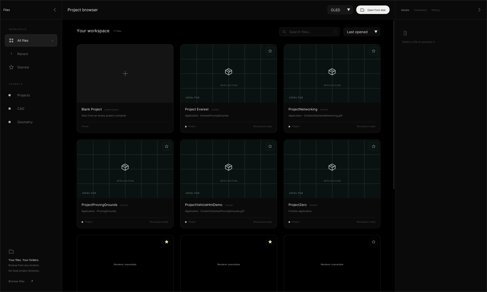
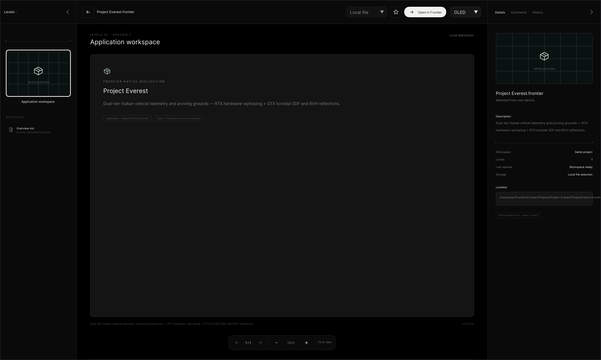
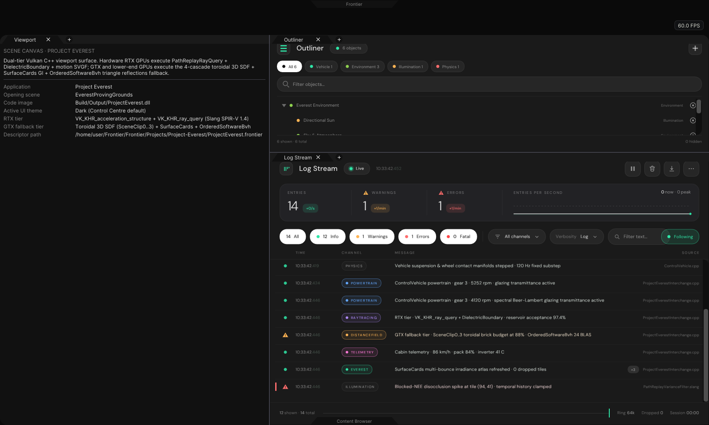
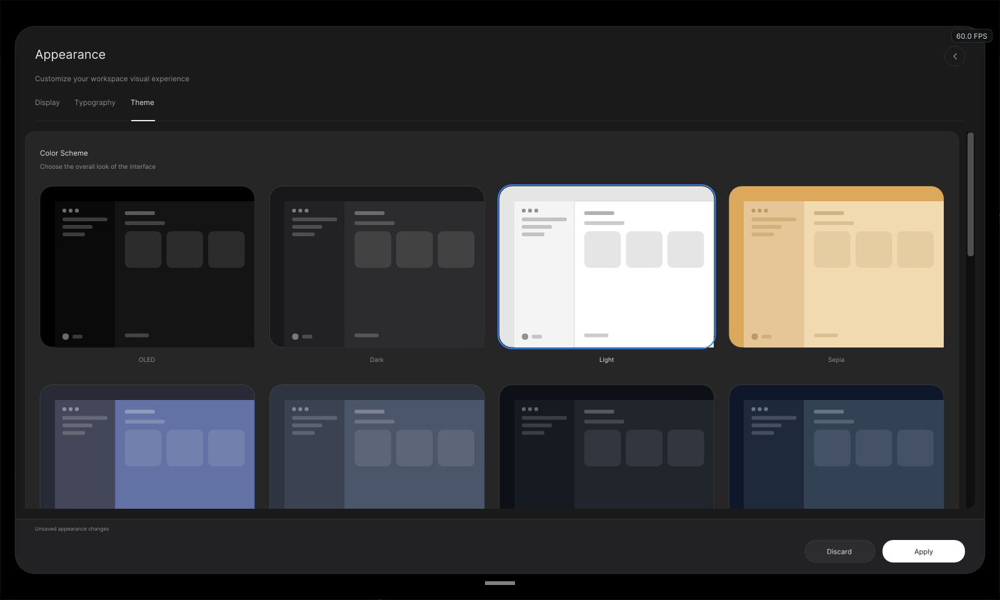
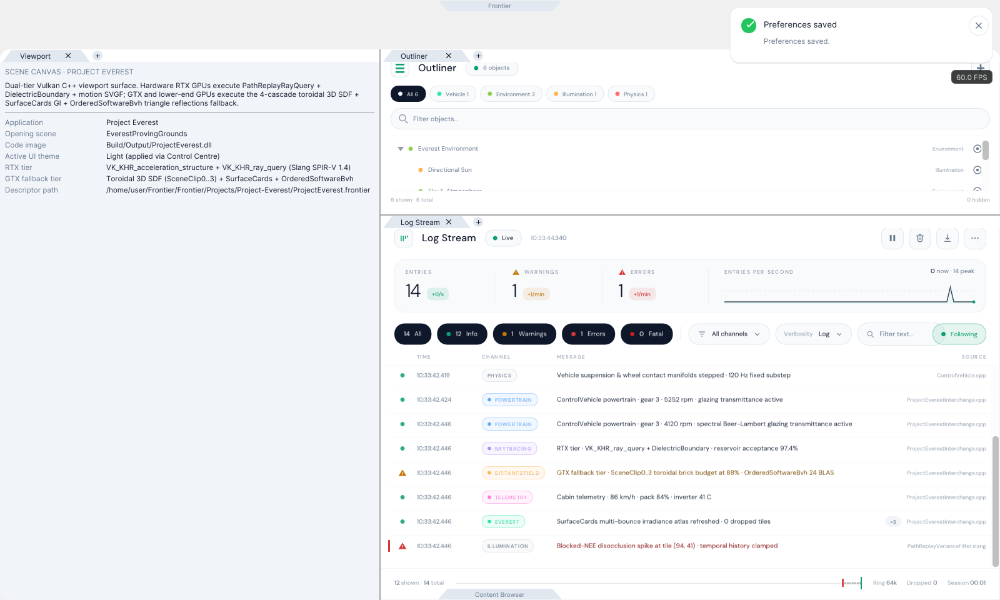
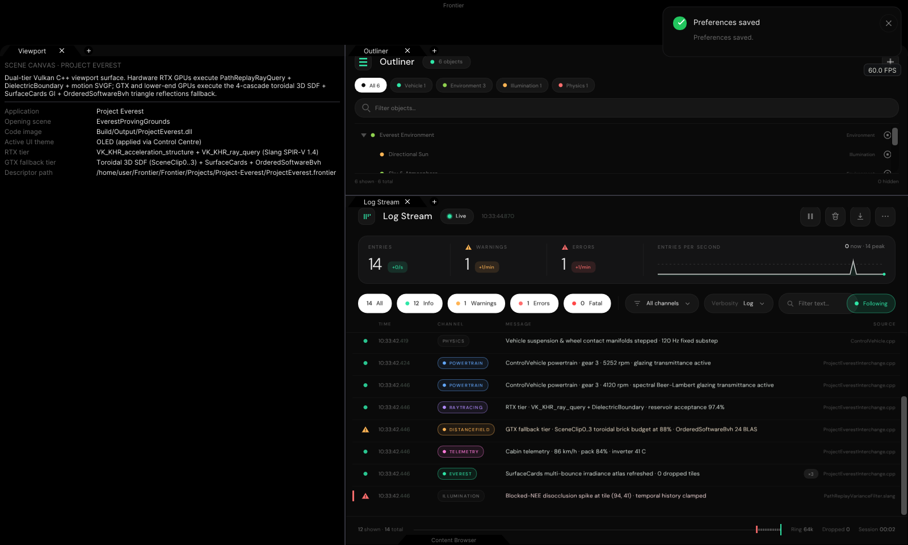

Project Everest — Native C++ UI Verification Gallery
Actual CPU-rasterised ImGui + ThorVG + TypefaceRegistry output from
Exhibits/ProjectEverest/Code/ProjectEverestValidation.cpp (1600×960):
Project Browser discovery → Project Everest selection → native workspace hand-off with
ControlCentrePanel, PanelDockspace, SceneDirectoryPanel, and
LogStreamPanel across Dark, Light, and OLED themes.
01 · Project Browser opens with Project Everest enumerated from Frontier/Projects
01-ProjectBrowser-Library.png

02 · Selecting Project Everest opens the native application Reader & Open in Frontier hand-off
02-ProjectBrowser-SelectEverest.png

03 · Project Everest workspace opened (Control Centre notch + Dockspace + Outliner + Log Stream, Dark theme, luma 38.25)
03-ProjectEverest-Workspace-Dark.png

04 · Control Centre top drawer opened via trapezoidal notch → Appearance → Theme (Light selected)
04-ProjectEverest-ControlCentre-ThemeDrawer.png

05 · Light theme applied via Control Centre — Dockspace, Outliner, and Log Stream re-themed live (luma 243.16)
05-ProjectEverest-Workspace-Light.png

06 · OLED theme applied via Control Centre — pure-black OLED surfaces across workspace (luma 23.32)
06-ProjectEverest-Workspace-OLED.png
